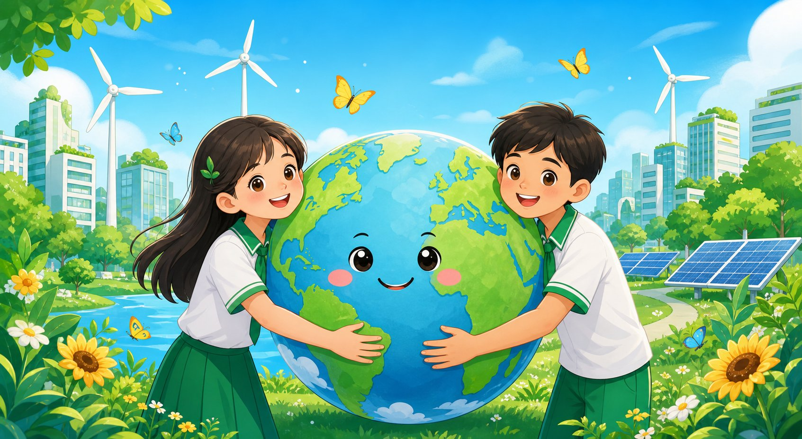
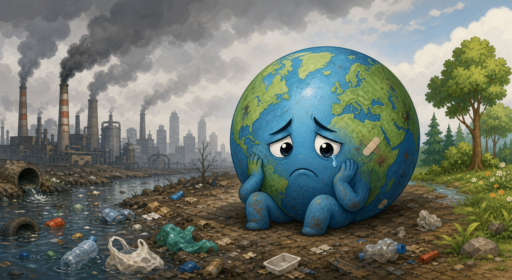
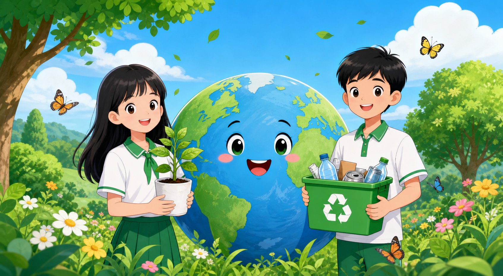
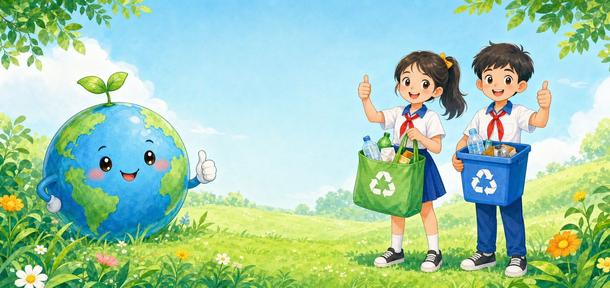

1
Sống xanh là gì?
Khám phá khái niệm, ý nghĩa và lợi ích của lối sống xanh đối với bản thân, gia đình và môi trường.
Xem thêmSống xanh không hề khó. Hãy cùng bắt đầu từ những thói quen đơn giản ở trường, ở nhà và lan tỏa điều tốt đẹp đến mọi người.
Tám chủ đề trực quan giúp em hiểu, thực hành và lan tỏa những việc làm tốt cho Trái Đất.
Khám phá khái niệm, ý nghĩa và lợi ích của lối sống xanh đối với bản thân, gia đình và môi trường.
Xem thêmTìm hiểu các vấn đề như ô nhiễm không khí, ô nhiễm nguồn nước, rác thải nhựa và biến đổi khí hậu.
Xem thêmKhám phá những việc làm đơn giản mỗi ngày giúp bảo vệ môi trường tại nhà, trường học và cộng đồng.
Xem thêmTham gia trò chơi, câu đố và các hoạt động tương tác để học mà chơi, chơi mà học.
Xem thêmHoàn thành các thử thách sống xanh mỗi ngày để hình thành thói quen tốt và nhận huy hiệu.
Xem thêmViết lời hứa và thực hiện những hành động nhỏ mỗi ngày để trở thành Đại sứ Sống Xanh.
Xem thêm0Hành động xanh
đã được thực hiện
0Bài học và hoạt động
hấp dẫn
0Tài liệu và học liệu
miễn phí
0Đại sứ Sống Xanh
đã cam kết
Sống xanh là lối sống tích cực, thân thiện với môi trường, được thể hiện qua những hành động nhỏ mỗi ngày nhằm giảm tác động xấu đến Trái Đất và hướng tới một cuộc sống bền vững hơn.

🍃🌿Sống xanh là cách chúng ta lựa chọn những thói quen và hành động thân thiện với môi trường:
Trái Đất của chúng ta đang gặp nhiều vấn đề nghiêm trọng. Cùng tìm hiểu nguyên nhân và hậu quả để có hành động đúng đắn nhé!

Những việc làm nhỏ mỗi ngày sẽ tạo nên thay đổi lớn cho Trái Đất!

Ngôi nhà xanh – Bắt đầu từ những thói quen nhỏ
Tắt đèn, quạt, thiết bị điện khi không sử dụng.
Khóa vòi nước khi không dùng, sử dụng nước hợp lý.
Phân loại rác đúng cách để tái chế và giảm ô nhiễm.
Ưu tiên đồ dùng tái sử dụng, thân thiện môi trường.
Tạo đồ dùng mới từ những vật liệu đã qua sử dụng.
Chăm sóc cây xanh giúp không gian sống trong lành hơn.
Trường học xanh – Học tập trong môi trường xanh
Giữ lớp học sạch sẽ, không xả rác bừa bãi.
Sử dụng giấy tiết kiệm, tận dụng cả hai mặt giấy.
Tắt đèn, máy chiếu, điều hòa khi không sử dụng.
Hạn chế chai nhựa dùng một lần.
Tham gia phong trào xanh do lớp, trường phát động.
Trang trí bằng cây xanh, sản phẩm tái chế và thông điệp xanh.
Cộng đồng xanh – Lan tỏa yêu thương
Bỏ rác đúng nơi quy định, giữ gìn môi trường chung.
Giảm khí thải, bảo vệ không khí và tiết kiệm năng lượng.
Tham gia trồng cây gây rừng, phủ xanh môi trường.
Dọn vệ sinh, thu gom rác và làm sạch môi trường.
Lan tỏa thông điệp sống xanh đến bạn bè, người thân.
Ưu tiên sử dụng sản phẩm xanh, an toàn và bền vững.
Phân loại rác đúng cách – Việc nhỏ nhưng ý nghĩa lớn, giúp bảo vệ môi trường và xây dựng tương lai xanh!

Là các loại rác dễ phân hủy, có nguồn gốc từ thực vật, động vật.
Là các loại rác có thể tái sử dụng, tái chế thành sản phẩm khác.
Là các loại rác không thể tái chế, khó phân hủy.
Chọn thùng phù hợp, sau đó kéo từng món rác vào đúng thùng.
Xác định loại rác mình đang có.
Bỏ rác vào đúng thùng theo loại.
Rác được thu gom đúng quy định.
Rác được xử lý hoặc tái chế thành sản phẩm mới.
✓ Giảm ô nhiễm môi trường ✓ Tiết kiệm tài nguyên ✓ Tái chế hiệu quả
Phân loại rác là hành động nhỏ nhưng mang lại thay đổi lớn cho môi trường và cuộc sống!
Nhấn “Bắt đầu” để thử sức với 10 câu hỏi xanh.
Hoàn thành một hành động mỗi ngày. Đánh dấu và cùng bạn bè tạo nên một tuần thật ý nghĩa!
 Cùng nhau hoàn thành!
Cùng nhau hoàn thành!Khám phá kiến thức và lan tỏa lối sống xanh mỗi ngày qua những tài liệu trực quan.
Trao tặng cho
Tên của bạnLớp · Trường
🌿 Cùng hành động vì Trái Đất 🌿Bạn đã hoàn thành đủ 7 ngày sống xanh. Bảy hành động nhỏ hôm nay đang góp phần tạo nên một Trái Đất xanh hơn!